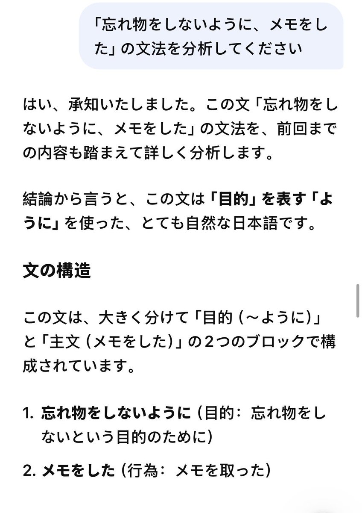
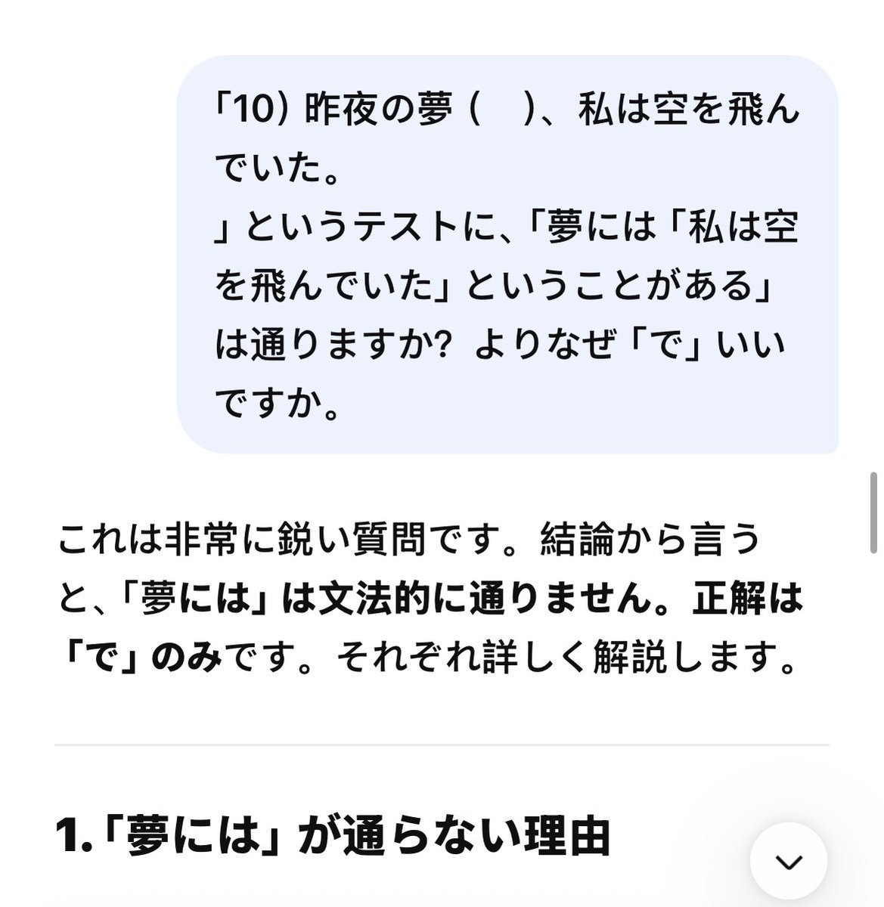
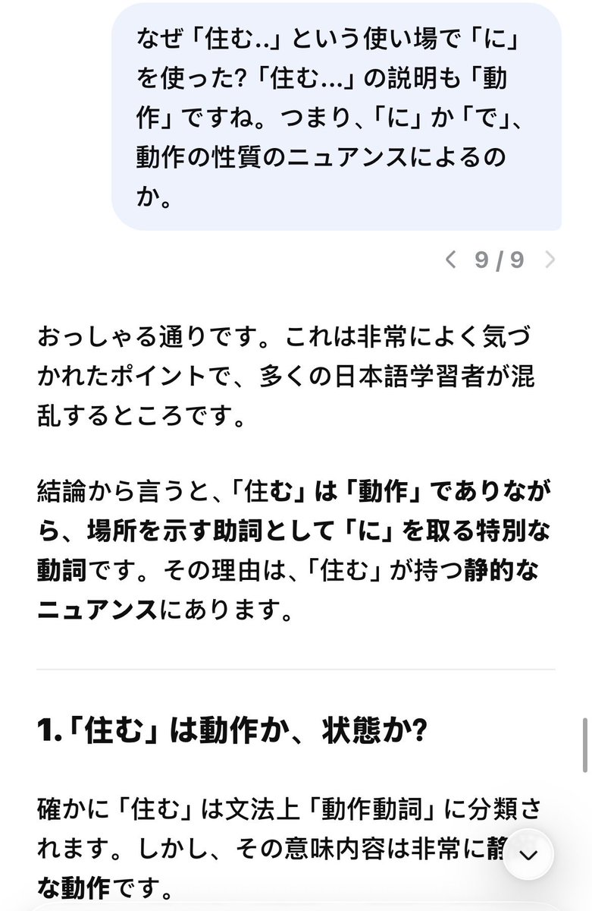

大狐帝国史官邹智萱（笔名段歌文）
@Rococo90933671
@FallenF58682 一切能进步的方法都很吃意志力🥹



残夜🍇
@FallenF58682
我的自学日语方法：背单词+纯日语和ai聊天+看原版书三者调配。
零基础开始，一周磨完标日初级上前10课，背完词汇（约300词）。然后花两周磕绊地用日语问ai各种疑惑，若不知道对应词汇，马上问ai“如何用日语表达xx”然后造句。再用两周借助ai看70页左右原版书。
然后我就能看懂n2文章了。
参考prompt： https://t.co/UHO2qjogMe